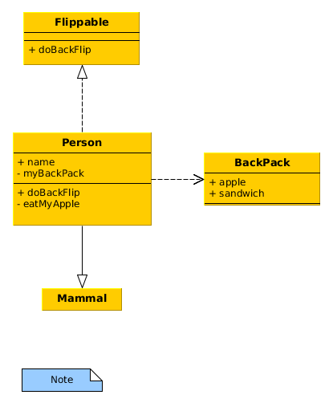

aez-python-notes

Table of Contents
Python notes
Syntax
Assertions
assert 1 == 1
Dictionary
my_dict = {"foo": 1, "bar": 'a'}
List comprehension
[f(x) for x in xs if p(x)]
Object oriented programming
UML design and Python implementation

Figure 1: Example of a UML class diagram
from abc import ABC, abstractmethod class Mammal: def __init__(self, name): self.name = name class Flippable(ABC): @abstractmethod def doBackFlip(self): pass class Person(Mammal, Flippable): def __init__(self, name): super().__init__(name) self.backpack = Backpack() def doBackFlip(self): print(f"{self.name} did a backflip!") def checkForApple(self): return self.backpack.checkForApple() def eatApple(self): if self.backpack.getApple(): print(f"{self.name} ate an apple!") else: print(f"{self.name} has no apples to eat!") class Backpack: def __init__(self): self.content = ['apple', 'sandwich'] def checkForApple(self): return "apple" in self.content def getApple(self): if self.checkForApple(): self.content.remove("apple") return "apple" return None def main(): john = Person("John") john.doBackFlip() if john.checkForApple(): john.eatApple() john.eatApple() if __name__ == "__main__": main()
Virtual environment
python3 -m venv venv source venv/bin/activate pip install -U pip # update pip pip install -r requirements.txt deactivate
To save a copy of the packages in an environment you can use freeze
pip freeze > requirements.txt
If you are struggling to get this working in an Emacs REPL, see these notes.
Pip
To install a package from source
pip install <package> -e <path/to/source>
PIP VANISHED!!!
If you get a weird message about pip not being there you can try running
python3 -m ensurepip. I do not understand why pip vanished but this brought it
back.
Colab
If you are using Google's Colab to run notebooks, the requests package is
useful for reading files from Github.
Jupyter via Nix
nix-shell --command "jupyter lab"
can be run from a directory with the following shell.nix file to start a
jupyter lab server.
# This provides a shell running a jupyter lab server. To start the server run
# the following command
#
# $ nix-shell --command "jupyter lab"
let
jupyter = import (builtins.fetchGit {
url = https://github.com/tweag/jupyterWith;
rev = "10d64ee254050de69d0dc51c9c39fdadf1398c38";
}) {};
ipython = jupyter.kernels.iPythonWith {
name = "python";
packages = p: with p; [ numpy
altair
scipy
pandas
matplotlib ];
};
jupyterEnvironment = jupyter.jupyterlabWith {
kernels = [ ipython ];
};
in
jupyterEnvironment.env
Spacemacs layer
| Shortcut | Effect |
|---|---|
SPC m V a |
Activate a virtual environment |
SPC m V d |
Deactivate the virtual environment |
SPC ' |
Start a REPL |
SPC m s <x> |
Send <x> to the REPL |
- I have found that if I'm using a virtual environment I need to pip install IPython before I can use the REPL properly. If the REPL starts in the wrong python version even after activating the virtual environment this might be worth a try.
Help
There is the function help which you can give an object and it will attempt to
provide some information about the class of the object. You can also get a list
of the attributes of an object with the .__dir__() method.
Debugging
There is a built-in debugger, pdb, which can be included with the
following commands.
import pdb; pdb.set_trace()
See my emacs configuration for details on how to use a nice front-end for this.
TODO Functional programming
- Python 3.10 supports structural pattern matching!
- Python 3.5 supports type hints!
- Functional Programming HOWTO
Python packages
For notes on installation of packages see the notes above about pip.
VLC
The following makes use of the python-vlc library to stream radio.
import vlc import time # -------------------------------------------------------------------- # For finding more radio stations, you may want to check out websites # such as Internet-Radio or TuneIn, which offer thousands of free # online radio stations. Most of these stations provide their # streaming URL which you can use to listen in your favorite media # player. # When you navigate these websites, you typically select a station # you're interested in and look for an option that says something like # "play in your own player" or "manual streaming". This usually leads # to a .pls, .m3u, .asx or .xspf file being downloaded. These files # contain the actual URL(s) for the stream, and can be opened in a # text editor to view the stream URL. # -------------------------------------------------------------------- # BBC World Service # url = "http://stream.live.vc.bbcmedia.co.uk/bbc_world_service" # Majestic Jukebox Radio url = "http://uk3.internet-radio.com:8405/live" instance = vlc.Instance() player = instance.media_player_new() media = instance.media_new(url) player.set_media(media) player.play() # Keep the program running while the radio plays try: while True: time.sleep(1) except KeyboardInterrupt: # On Ctrl+C, stop the player and quit player.stop()
Numpy
Notes
- The
ndarrayis the core data type, it consists of n-dimensional homogeneous arrays of a fixed size.- The
ndimmethod tells you the dimension of the array. - If
aisnp.array([1,2,3]), thena.shapewill be(3,)and botha[:,np.newaxis]anda.reshape((3,1))will be a(3,1)column vector.
- The
- Broadcasting is the implicit use of element-wise operations which means that the code is vectorised by default.
- Numpy expects an iterable for array construction when using
np.array. - Arithmetic operations are all performed element-wise. So are logical operations.
- Universal functions such as the exponential, and trigonometric functions apply element-wise.
- Python has zero-based indexing:
a[2]gives the third element.- In the multidimensional case
a[i,j]is the same asa[(i,j)].
- In the multidimensional case
- The colon is used to take a slice through a dimension. Trailing, unspecified dimension values are treated as slices.
- Assignment and function call do not copy the array.
- The
viewmethod of an array creates a view. - Slicing an array returns a view, not a copy.
- The
copymethod of an array creates a copy. You need to explicitlydel my_arrayto free memory though. - There are all the functions and methods you would expect for arrays.
- To write and read data from CSV, numpy provides the
savetxtandloadtxtfunctions.
Comparison with R
| Python | R |
|---|---|
np.linspace(a, b, num = 10) |
seq(from = a, to = b, length = 10) |
np.array([x1, x2, x3]) |
c(x1, x2, x3) |
a1 * a2 |
a1 * a2 |
a1 @ a2 |
a1 %*% a2 |
np.vstack((a1, a2)) |
rbind(a1, a2) |
a.transpose() |
t(a) |
Pandas
Pandas is an attempt to bring R-style data frames to python. There is a comparison with R in the quickstart guide.
import pandas as pdand importSeriesandDataFrameinto the global namespace since these will be used a lot in pandas work.Seriesare indexed arrays and you can provide your own indices. The indices can be used to select elements of the array or you can treat the whole array as a numpy array. A dictionary with values of a single type can be used as data to construct aSerieswith the keys as the indices.DataFrameinstances can be constructed by passing in a dictionary or lists of equal length. There is one index list for each axis of the dataframe. Columns can be modified or created by assignment.- Indexing into a dataframe returns a view so any modification of that result will also modify the original dataframe. To avoid this you need a copy for which there is a method provided.
- There is a
dropmethod for removing elements of series and dataframes. - There are summary statistics, which take an
axisargument to specify which axis to apply them to.
- Beware the difference between views and copies of data when using pandas.
There is the
copymethod to help you a lot of the time.
IO
- Reading in data with
pd.read_csvandpd.read_tablethere is ato_csvmethod. There are similar methods for_jsonin newer versions of pandas.
Munging
The pandas data frame has a rename method to rename the columns:
my_df.rename(columns={"old_name_1": "new_name_1",
"old_name_2": "new_name_2"})
Exploratory data analysis
- A combination of the
describe,infoanddtypesmethod provide an acceptable replacement for thestrandsummaryfunctions from R. - The
columnsmethod returns an array of the column names. - There is a
quantilemethod on Series which takes an iterable of probabilities to evaluate the quantiles at.
Cross tabulation
Assume `df` has columns `discretea` and `discreteb`, then the following will cross tabulate the number of each pair.
pd.crosstab(df.discrete_a, df.discrete_b)
- The
.value_countsmethod is the same as thetablefunction from R. If you just want the unique values there is theuniquemethod. A notable extension ofvalue_countsis thecrosstabfunction which returns a table with the value count across multiple variables. Both the cross and regular tables are data frames themselves and can be used in subsequent calculations.
Filtering by column values
Given a data frame, `gapminder`, with a column called `year` the following will select only the rows corresponding to the year 2002.
gapminder_not_2002 = gapminder[gapminder.year != 2002]
Note that you might want to use a copy of `gapminder` here as this appears to only return a view of the data.
Matplotlib
Jupyter
To get this working in a jupyter notebook you'll need the following at the head of the first cell pretty much.
%matplotlib inline import matplotlib.pyplot as plt
There are standard functions: scatter; plot, which appears to be for lines; and hist. Legends need to be added seperately.
Random notes
- You want to use the pyplot interface:
import matplotlib.pyplot as plt. - You create a figure object first:
fig = plt.figure() - You create an axes object from the figure object:
ax = fig.add_axes([0.1,0.1,0.8,0.8]) - If you want to draw multiple subplots there are methods to generate multiple axes.
- The axes object has all sorts of methods to draw different geometric objects.
There is a
plotmethod for basic lines and points, but there are other methods, egbarandtextto draw other things. - You show the figure with
plt.show(), or you can save it with theplt.savefig()method.
Statsmodels
Where the Pandas package provides R-style data frames in python, the Statsmodels attempts to provide all of the statistics functionality of R (primarily regression functions). The standard import statements for using Statsmodels are shown below.
import pandas as pd import statsmodels.api as sm import statsmodels.formula.api as smf
There is a module which provides all of the familiar datasets from R. Note that
in this example "Duncan" is the name of the data set which is provided by the
"carData" package. There is a full list available through the module
documentation.
duncan_prestige = sm.datasets.get_rdataset("Duncan", "carData") print(duncan_prestige.__doc__) # for meta-data duncan_prestige.data # pandas dataframe
NetworkX
- A node can be any hashable object (importantly it can be a dictionary); the
value of
Noneis reserved to indicate that something is not a node. - A graph
Ghas some properties:G.nodes,G.edges, andG.adj(adjacency pairs). - A graph
Ghas some methods to help with construction:G.add_node(), andG.add_edge(). - There is an Algorithms section to the API containing useful graph algorithms.
Mutating a network
- relabel a node with
networkx.relabel.relabel_nodes
Hy
(import [matplotlib.pyplot :as plt])
(defn fib [n]
(if (< n 2)
1
(+ (fib (- n 1))
(fib (- n 2)))))
(setv x_vals (range 10))
(setv fib_vals (list (map fib x_vals)))
(do
(plt.figure)
(plt.scatter x_vals fib_vals :color "r")
(plt.show))
appdirs==1.4.4 astor==0.8.1 colorama==0.4.4 cycler==0.10.0 funcparserlib==0.3.6 hy==0.20.0 jedhy==1 kiwisolver==1.3.2 matplotlib==3.4.3 numpy==1.21.3 Pillow==8.4.0 pkg_resources==0.0.0 pyparsing==3.0.1 python-dateutil==2.8.2 rply==0.7.8 six==1.16.0 toolz==0.11.1